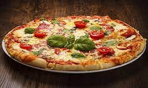

La Pizzeria
Una pizzería es un local donde se elaboran o consumen pizzas. Aunque son de origen italiano, hoy las pizzerías es un tipo de restaurante que se ha extendido por todo el mundo
Tipos de Pizza
• La pizzería como restaurante en el que se consumen principalmente pizzas y sus variantes (calzone, crostini, focaccia, bruschette, etc.) en el que a menudo es posible encontrar también otro tipo de comida. La estructura del local es análoga a la de cualquier otro tipo de restaurante con la peculiaridad de que el cocinero está especializado en la confección y horneado de pizzas.
• La pizzería como establecimiento al detalle para la venta de porciones de pizza. Es un local en el que se puede pedir sólo una porción de pizza, a veces, acompañada de bebida que se consume preferentemente en la modalidad de take away o de mesas en sistema de autoservicio
La Pizzeria Restaurante
Como en otros restaurantes, los camareros sirven en la mesa y toman los pedidos a partir de la carta. La pizza viene ofrecida como un plato más y no es posible elegir una cantidad precisa de pizza sino tan solo la pizza completa. Otros platos característicos de las pizzerías son todos aquellos elaborados a partir de pasta: macarrones, espaguetis, etc. Las bebidas suelen incluir algunos vinos típicamente italianos. En honor a su origen las pizzerías están a menudo decoradas como un tradicional restaurante italiano, con manteles de cuadros, farolillos, estampas de Italia, etc.

Promociones de Pizza
Margarita

Como hemos visto, la pizza margarita es la más clásica de las pizzas italianas y la que abrió paso al resto de pizzas que posteriormente se fueron elaborando.Los ingredientes de esta pionera no fallan, y son los preferidos de los auténticos amantes de la pizza tradicional: salsa de tomate, mozzarella, albahaca, orégano y aceite de oliva. ¿A qué te recuerdan los colores de estos ingredientes? Sí, a la bandera italiana
VerNapolitana
Junto con la margarita, la pizza napolitana se sitúa como la segunda más tradicional de Italia. Una de las peculiaridades de esta pizza, también conocida como romana, es su masa: suave, esponjosa y algo más gruesa que la ortodoxa italiana, con los bordes más altos. Sus ingredientes, algo más valientes que la clásica margarita: salsa de tomate, queso mozzarella, anchoas, orégano, alcaparras y aceite de oliva
VerCarbonada

La pizza carbonara es, seguramente, una de las pizzas blancas más famosas (no lleva tomate en su base). Su textura jugosa y cremosa se la debe a los ingredientes con los que tradicionalmente se elabora la salsa carbonara: huevo, queso parmesano, sal y pimienta. Una de las claves para que la carbonara quede perfecta está en cocinar previamente estos ingredientes en una sartén o cazuela.
Ver